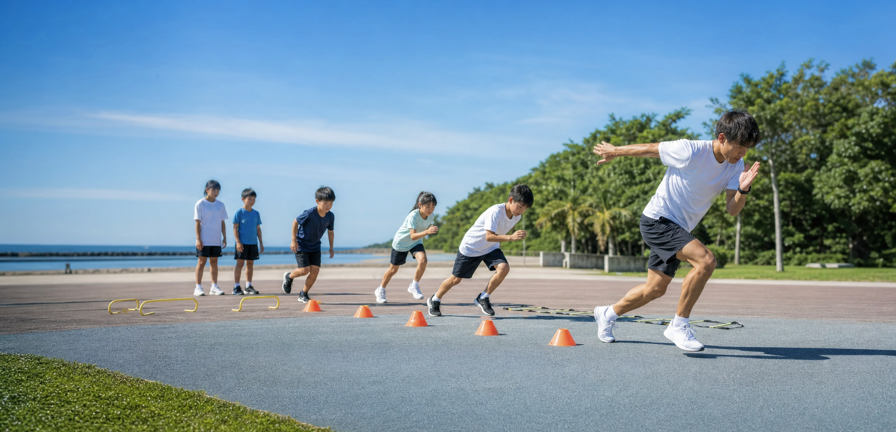
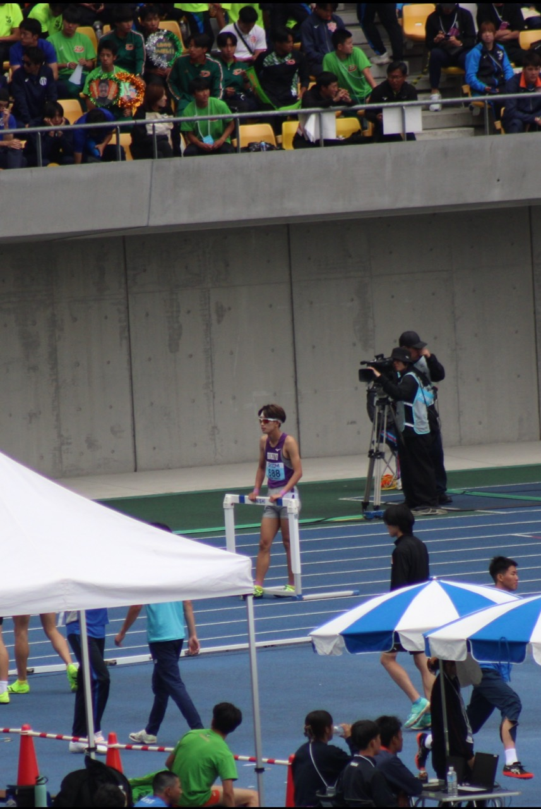

初心者にもわかりやすい
姿勢、腕振り、接地、スタートなど、速く走るための基本をシンプルな言葉で伝えます。

千葉市周辺の走り方教室・アスリート育成クラブ
走る楽しさから、全国を目指す力まで。
Ailes Track Club（エールズトラッククラブ）は、千葉市周辺で活動する小中学生向け走り方教室・中高生向けアスリート育成クラブです。
初心者も、競技力を高めたい選手も、まずは体験からご参加ください。
Concept
Ailesはフランス語で「翼」。一人ひとりが自分の可能性を広げ、目標に向かって羽ばたいていけるように、 走る楽しさと本気で成長するための技術を伝えていきます。
小学生のはじめての走り方から、中学生の自己ベスト更新、高校生の上位大会挑戦まで。 年齢や競技レベルに合わせて、わかりやすく実践的にサポートします。
Features
姿勢、腕振り、接地、スタートなど、速く走るための基本をシンプルな言葉で伝えます。
加速、最高速度、スピード持久力、ハードル技術など、目標に合わせて実践的に指導します。
小学生の走り方教室から全国大会を目指す育成コースまで、長く成長を支えられるクラブです。
Courses
Ailes Track Clubでは、はじめて走り方を学ぶ小学生から、全国大会を目指す中高生アスリートまで、 一人ひとりの目標に合わせたコースを用意しています。
初心者には楽しくわかりやすく。競技者には専門的で実践的に。 「走る楽しさ」から「勝つための力」まで、段階的にサポートします。
Beginner
Junior
Performance
Hurdle
Price
グループレッスンの単発参加は、Ailes Kids・Ailes Junior・Ailes Athlete・Ailes Hurdleの全コース一律2,000円です。 月謝会員を優先しながら、空きがある場合に単発参加を受け付けます。
小学生・初心者
中学生
中高生競技者
ハードル専門
Personal Lesson
単発参加料金の対象外です。フォーム改善、試合前の調整、専門種目の課題整理など、個別の目的に合わせて実施します。
Area
稲毛海浜公園、千葉市周辺の公園・陸上競技場で活動します。 詳細な集合場所は、申込後に天候や人数、コース内容に合わせてご案内します。
雨天やグラウンド状況が悪い場合は、安全を優先して中止または日程変更を行います。 実施判断は当日までにLINEまたはメールでご連絡します。

Coach
Ailes Track Clubのコーチは、獨協大学陸上競技部に所属し、400mハードルを専門としている現役大学生アスリートです。
自身も競技者として記録向上を目指しながら、部活動では主将としてチームをまとめ、 選手一人ひとりの目標や課題に向き合ってきました。
Ailes Track Clubでは、ただ速く走らせるだけでなく、「走るのって楽しい」と感じられること、 そして競技者が「もっと上を目指せる」と思えることを大切にしています。
初心者にはわかりやすく、競技者にはより専門的に。 一人ひとりのレベルや目標に合わせて、長期的な成長をサポートします。
Safety
発熱、強い痛み、ケガの不安がある場合は参加をお控えください。練習中に違和感がある場合は、すぐに休憩します。
動きやすい服装、運動靴、飲み物、タオルをご用意ください。夏場は帽子や多めの水分もおすすめです。
フォーム確認や活動紹介のため撮影する場合があります。掲載が必要な場合は、事前に保護者の同意を確認します。
FAQ
はい。Ailes Kidsでは初心者も歓迎です。走る基本からわかりやすく練習します。
はい。Ailes Junior、Ailes Athlete、Ailes Hurdleでは、記録更新や上位大会を目指す選手に向けた専門的な指導を行います。
可能です。練習場所のルールに沿って、近くで見学いただけます。
安全に実施できない場合は中止または日程変更を行い、LINEまたはメールでご連絡します。
Trial Lesson
走ることを好きになりたい小学生も、自己ベストや全国大会を目指す中高生も。 Ailes Track Clubが、目標に合わせた一歩をサポートします。